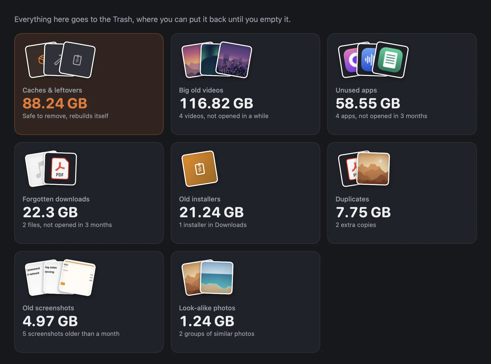
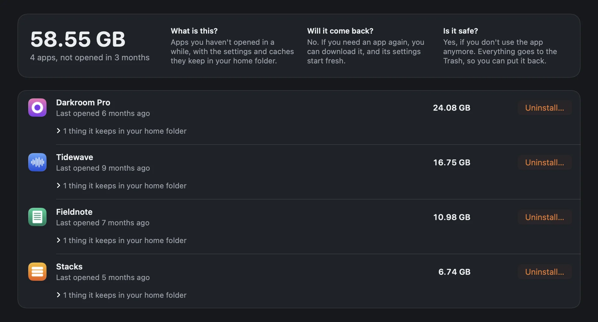
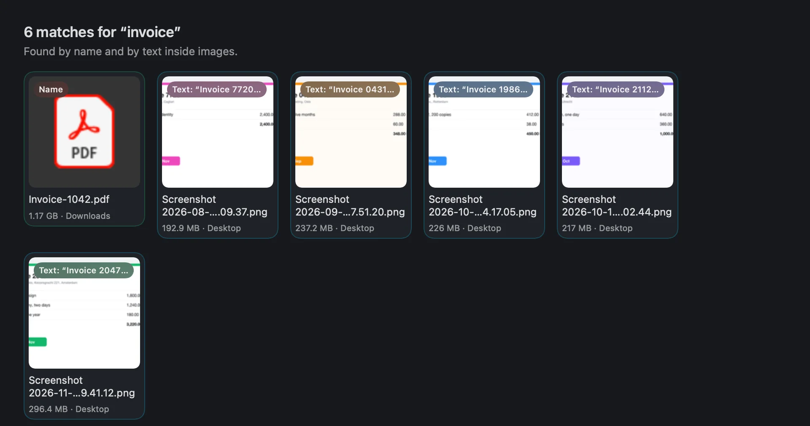
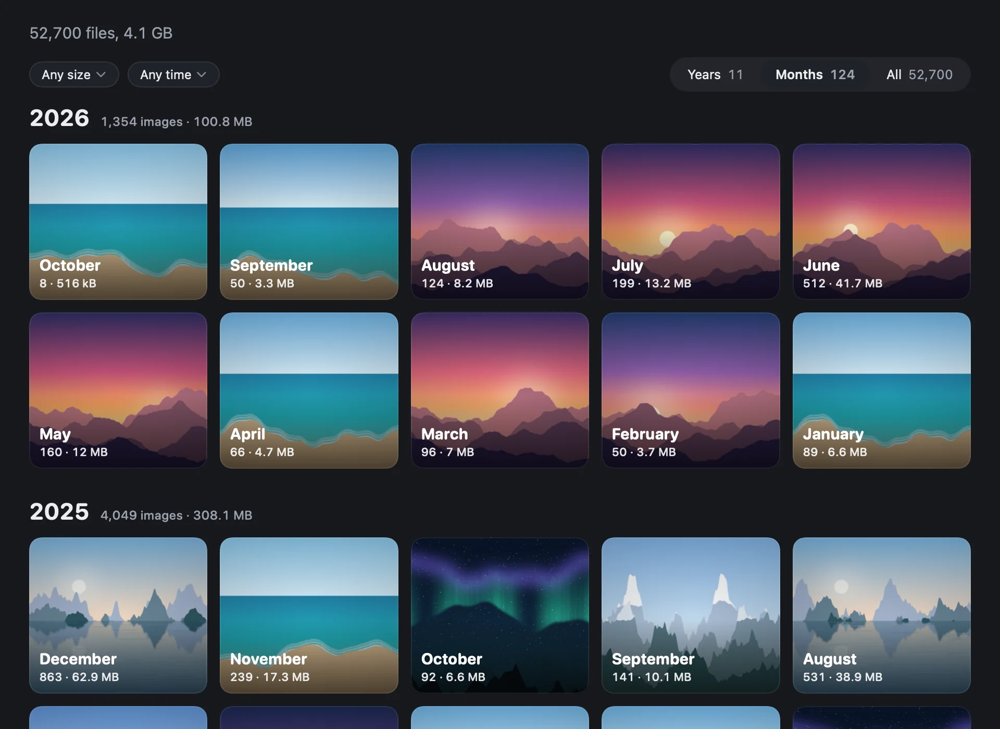
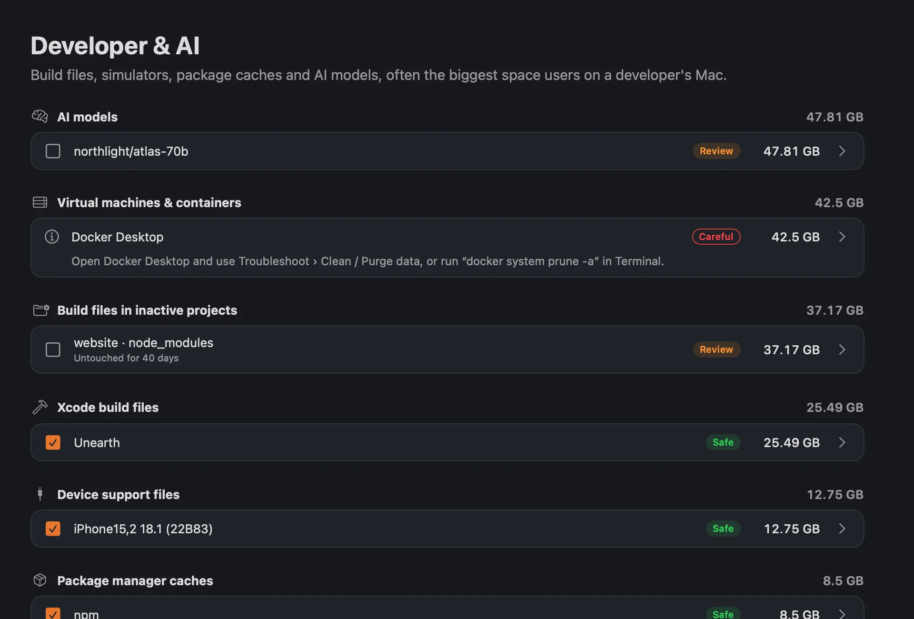
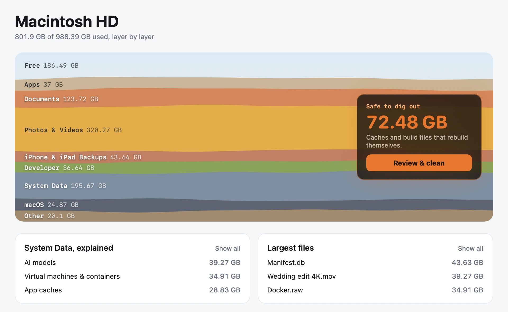
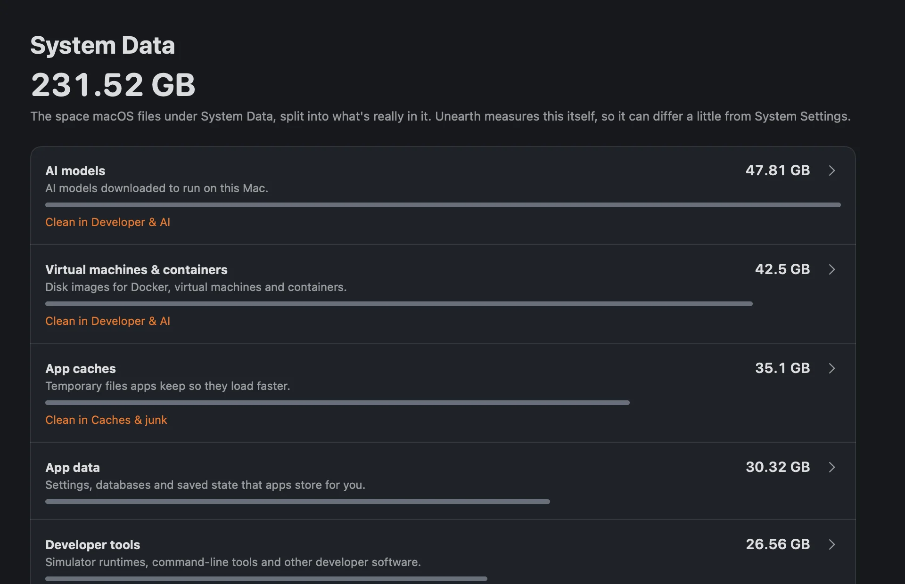
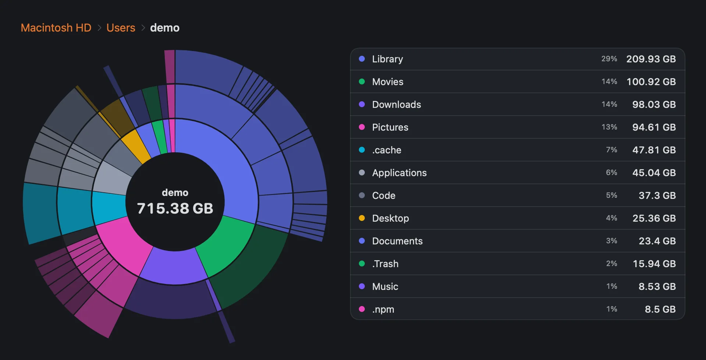

Apps 45.04 GB
Clean without fear.
Unearth finds the duplicates, look-alike photos, forgotten downloads, old installers, old screenshots, big old videos and unused apps you stopped thinking about. Before you remove anything, it tells you what you're looking at.
- What is this?
- Temporary files Xcode creates while building your apps.
- Will it come back?
- Yes. Xcode rebuilds them the next time you build the project.
- Is it safe?
- Yes. Your next build just takes a little longer.
Files go to the Trash, with Undo. Anything Unearth doesn't recognize is marked Careful and left unticked, and nothing happens without a click.


Documents 150.62 GB
Find anything.
Search by name, by the words inside a picture, or by what's in it. Type the way you'd say it, and Unearth turns it into filters you can edit. Every result says why it came up.

It reads on your Mac. Text and objects are recognized by Apple's on-device frameworks, in the background, at low priority.
Downloaded from. macOS records where every download came from, so everything you saved from ChatGPT, Canva, X or Slack is one click away.
Photos & Videos 229.01 GB
50,000 images. No scrolling.
Big folders open as an overview that fits what's in them: by date for photos, by folder for project files, by source for saved images. Crowded months split into days. Drag the rail to jump anywhere, and select a whole month or folder with one click.

Developer 44.61 GB
Goes deeper for developers.
Build files, package caches, simulators and AI models are often the biggest things on a developer's Mac. Unearth knows them by name. Docker and other virtual disks are reported with the command that shrinks them, and Unearth never deletes those itself.
- Xcode
- npm
- pnpm
- Yarn
- pip
- uv
- Conda
- Cargo
- Gradle
- Maven
- CocoaPods
- Homebrew
- Hugging Face
- Ollama
- Playwright
- Docker

System Data 231.52 GB
See where the space went.
macOS files hundreds of gigabytes under System Data and leaves it there. Unearth splits it into named parts, such as swap, app data, caches and virtual machines, and says plainly what it couldn't identify.



macOS 24.91 GB
Nothing leaves your Mac.
- No analytics
- No account
- No update checks
- No crash reports
Unearth never connects to the internet. Your index, your thumbnails and everything it reads stay on your disk, and the source code is public, so anyone can check.
Full Disk Access is optional. It lets Unearth measure Mail, Messages and iPhone backups. Without it, Unearth still works and some space shows as Not identified.
Free. No trial, no subscription.
Delete as much as you like without paying. There's nothing to unlock.
Free. Requires macOS 26 or later.